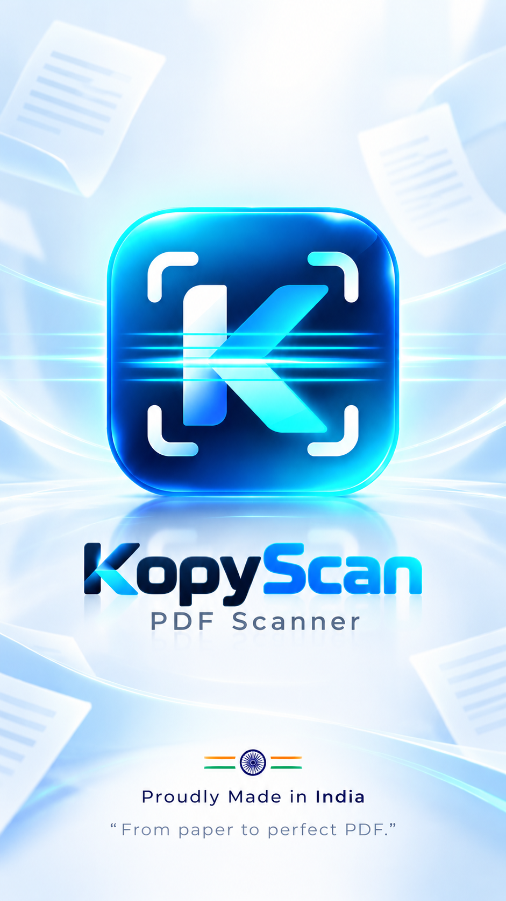
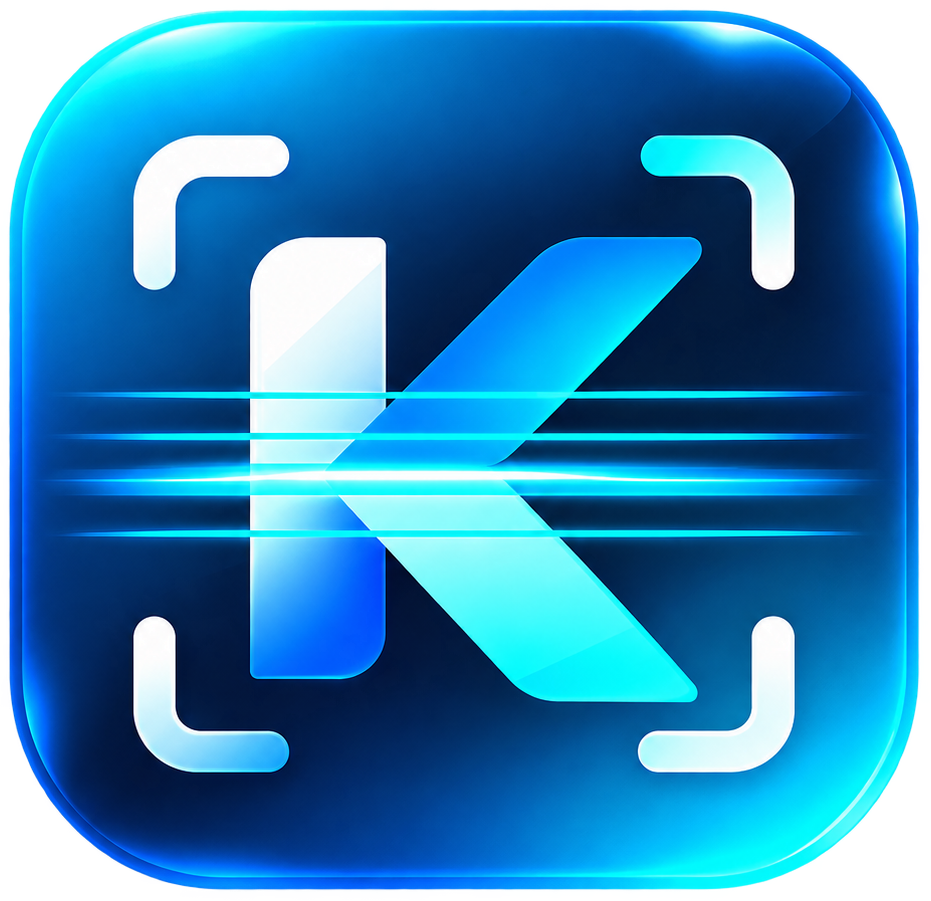

Scan clearly
Camera guidance helps you frame single or multi-page documents.
Android document scanner & PDF utility
KopyScan turns paper documents and images into clean, searchable PDFs—right from your phone.
Fast. Local-first. Built for everyday documents.

Why KopyScan
Purpose-built tools for the work between a paper page and a finished PDF.
Camera guidance helps you frame single or multi-page documents.
Crop, correct perspective, and choose a document enhancement profile.
Use OCR text view and document-local search when recognition succeeds.
Create, open, share, or save PDFs with searchable text where available.
Features
Useful scanning and PDF workflows without unsupported promises.
Capture and process one document quickly.
Build an ordered document one page at a time.
Adjust corners and correct photographed pages.
Choose Original, Clean, Gray, or Contrast.
Recognize text from supported scans on device.
Find words inside successfully recognized text.
Add available OCR text as a searchable layer.
Turn selected images into ordered PDF pages.
Add pages, rename documents, or delete them.
Use familiar Android viewers, sharing, and file picker.
How it works
Frame and capture.
Confirm page corners.
Choose the right profile.
Review recognized text.
Open, share, or save.
User Guide
Open a topic for concise, step-by-step guidance.

Under Scanned Documents, open the three-dot menu, choose Add more pages, then scan. New pages append to the existing document.
Use a document's three-dot menu. Choose Rename to save a new title, or Delete and confirm permanent removal.
Open launches a compatible document or PDF viewer. Share opens Android's sharing interface. Save to device opens Android's file picker so you control the destination and filename.
KopyScan extracts text from supported scans. Text view displays recognized content and lets you search it locally. OCR quality depends on the document, lighting, language, and image clarity, so results may not always be perfect.
Export PDF uses the visible scanned pages and adds recognized OCR text as a searchable layer where available.
Select one or more images to create ordered PDF pages, then open, share, or save the result. Plain TXT files can also be converted. Word, Excel, and PowerPoint formats are not currently supported.
Privacy overview
KopyScan uses camera permission for document capture and does not require broad storage permissions. Core document processing is designed to happen locally on the device where supported. Files saved or shared externally remain under your control.
The free version may display banner advertising through Google Mobile Ads / AdMob, which may process advertising-related device information under applicable consent requirements.
Read Privacy PolicyFAQ
No account is required for the current local scanning workflow.
Core scanning is designed around local document processing. Third-party advertising services may process advertising-related information separately.
Yes. Batch scanning keeps captured pages together in one ordered document.
Yes. Choose Add more pages from the document menu.
Yes, when OCR has successfully recognized the text.
Yes. Selected images become PDF pages in their selected order.
Yes, using Android's standard file picker.
The free version may display banner advertisements.
Not currently. KopyScan focuses on reliable scanning, OCR, images, TXT, and PDF workflows.
KopyScan Support
Need help with KopyScan?
We’re here to help with scanning, document processing, exports, and the app experience.
Email SupportTo help us investigate, please include your KopyScan app version, device model, Android version, a short description of the issue, and a screenshot if relevant.